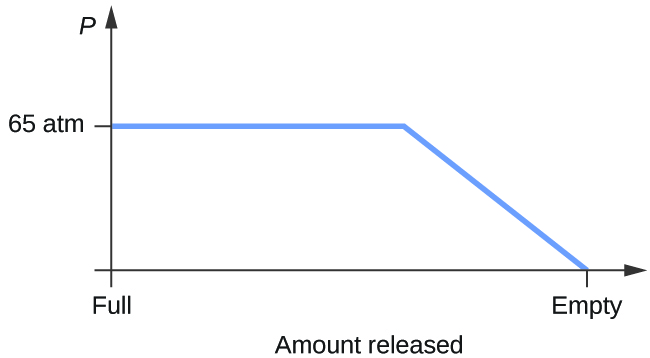
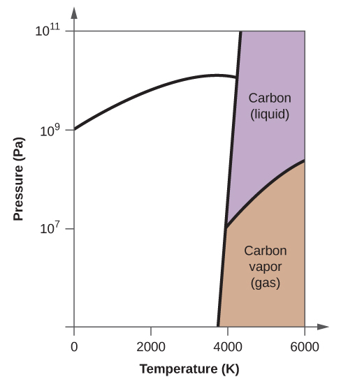
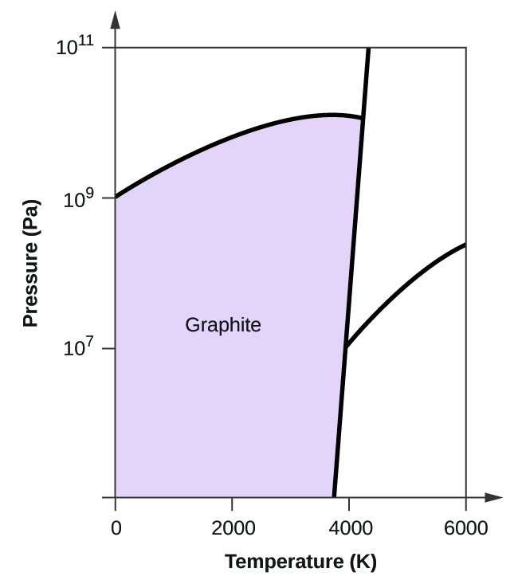
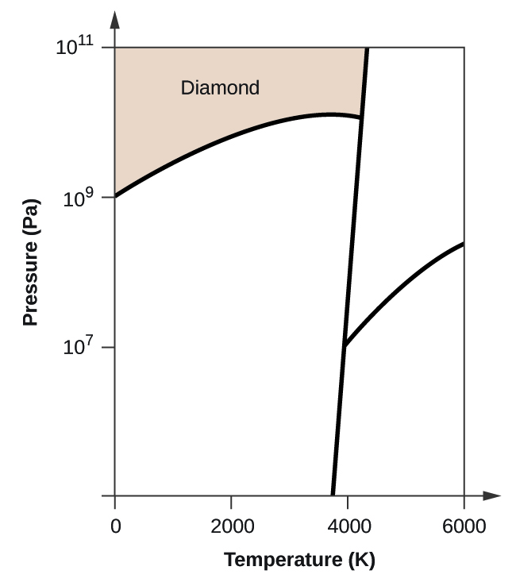
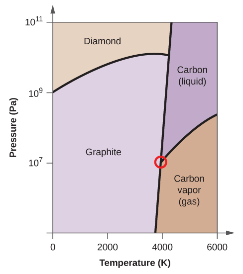

1. Los líquidos y los sólidos son similares en cuanto a que están compuestos de átomos, iones o moléculas. Son incompresibles y tienen densidades similares que son mucho más grandes que las de los gases. Son diferentes porque los líquidos no tienen una forma fija y los sólidos son rígidos.
3. Son similares en que los átomos o moléculas son libres de moverse de una posición a otra. Se diferencian en que las partículas de un líquido se limitan a la forma del recipiente en el que se colocan. Por el contrario, un gas se expandirá sin límite para llenar el espacio en el que se coloca.
5. Todos los átomos y moléculas se condensarán en un líquido o sólido en el que las fuerzas de atracción exceden la energía cinética de las moléculas, a una temperatura suficientemente baja.
7. (a) Las fuerzas de dispersión ocurren cuando un átomo desarrolla un momento dipolar temporal cuando sus electrones se distribuyen asimétricamente alrededor del núcleo. Esta estructura es más frecuente en átomos grandes como el argón o el radón. Un segundo átomo puede ser distorsionado por la aparición del dipolo en el primer átomo. Los electrones del segundo átomo son atraídos hacia el extremo positivo del primer átomo, que establece un dipolo en el segundo átomo. El resultado neto es dipolos temporales fluctuantes rápidamente que se atraen entre sí (por ejemplo, $\ce{Ar}$). (b) Una atracción dipolo-dipolo es una fuerza que resulta de una atracción electrostática del extremo positivo de una molécula polar para el extremo negativo de otra molécula polar (por ejemplo, las moléculas $\ce{HCl}$ se atraen entre sí por interacción dipolo-dipolo). (c) Los enlaces de hidrógeno se forman cada vez que un átomo de hidrógeno está unido a uno de los átomos más electronegativos, como un átomo de flúor, oxígeno o nitrógeno. La atracción electrostática entre el átomo de hidrógeno parcialmente positivo en una molécula y el átomo parcialmente negativo en otra molécula da lugar a una fuerte interacción dipolo-dipolo llamada enlace de hidrógeno (por ejemplo, $\ce{HF \cdots HF}$).
9. Las fuerzas de Londres suelen aumentar a medida que aumenta el número de electrones.
11. (a) $\ce{SiH4 \lt HCl \lt H2O}$; (b) $\ce{F2 \lt Cl2 \lt Br2}$; (c) $\ce{CH4 \lt C2H6 \lt C3H8}$; (d) $\ce{N2 \lt O2 \lt NO}$
13. Solo están disponibles interacciones dipolo-dipolo bastante pequeñas de los enlaces C-H para mantener el n-butano en estado líquido. Sin embargo, el cloroetano tiene interacciones dipolo bastante grandes debido al enlace $\ce{Cl-C}$; la interacción, por lo tanto, es más fuerte y conduce a un punto de ebullición más alto.
15. $−85\,°C$. El agua tiene enlaces de hidrógeno más fuertes, por lo que se derrite a una temperatura más alta.
17. El enlace de hidrógeno entre dos moléculas de fluoruro de hidrógeno es más fuerte que el que existe entre dos moléculas de agua porque la electronegatividad de F es mayor que la de O. En consecuencia, la carga negativa parcial en F es mayor que en O. El enlace de hidrógeno entre H parcialmente positivo y el F parcialmente negativo más grande será más fuerte que el formado entre H y O.
19. El enlace H es el principio del FIM que mantiene juntas las cadenas de proteínas. La unión H está entre $\ce{N−H}$ y $\ce{C=O}$.
21. (a) enlaces de hidrógeno, atracción dipolo-dipolo y fuerzas de dispersión; (b) fuerzas de dispersión; (c) atracción dipolo-dipolo y fuerzas de dispersión
23. Las moléculas de agua tienen fuertes fuerzas intermoleculares de enlace de hidrógeno. Las moléculas de agua se atraen fuertemente entre sí y exhiben una tensión superficial relativamente grande, formando un tipo de "piel" en su superficie. Esta piel puede soportar un insecto o un clip de papel si se coloca suavemente sobre el agua.
25. La temperatura tiene un efecto sobre las fuerzas intermoleculares: cuanto mayor es la temperatura, mayores son las energías cinéticas de las moléculas y mayor es el grado en que se superan sus fuerzas intermoleculares, y por lo tanto, más líquido (menos viscoso) es el líquido. Cuanto más baja es la temperatura, menos se superan las fuerzas intermoleculares y, por lo tanto, menos viscoso es el líquido.
27. (a) A medida que el agua alcanza temperaturas más altas, el aumento de las energías cinéticas de sus moléculas es más eficaz para superar los enlaces de hidrógeno, por lo que su tensión superficial disminuye. La tensión superficial y las fuerzas intermoleculares están directamente relacionadas. (b) Se observa la misma tendencia en la viscosidad que en la tensión superficial, y por la misma razón.
29. $1.7×10^{−4}m$
31. El calor es absorbido por el hielo, proporcionando la energía necesaria para superar parcialmente las fuerzas de atracción intermoleculares en el sólido y provocando una transición de fase a agua líquida. La solución permanece a $0\,°C$ hasta que todo el hielo se derrita. Solo la cantidad de agua existente como hielo cambia hasta que el hielo desaparece. Entonces la temperatura del agua puede aumentar.
33. Podemos ver disminuir la cantidad de líquido en un recipiente abierto y podemos oler el vapor de algunos líquidos.
35. La presión de vapor de un líquido disminuye a medida que aumenta la fuerza de sus fuerzas intermoleculares.
37. A medida que aumenta la temperatura, aumenta la energía cinética promedio de las moléculas de gasolina y, por lo tanto, una fracción mayor de moléculas tiene suficiente energía para escapar del líquido que a temperaturas más bajas.
39. Son iguales cuando la presión del gas sobre el líquido es exactamente $1\,atm$
41. aproximadamente $95\,°C$
43. (a) A $5000\,pies$, la presión atmosférica es más baja que al nivel del mar y, por lo tanto, el agua hervirá a una temperatura más baja. Esta temperatura más baja hará que los cambios físicos y químicos involucrados en la cocción del huevo procedan más lentamente, y se requiere más tiempo para cocinar el huevo por completo. (b) Mientras el aire que rodea el cuerpo contenga menos vapor de agua que el máximo que el aire puede contener a esa temperatura, la transpiración se evaporará, enfriando así el cuerpo al eliminar el calor de vaporización requerido para vaporizar el agua.
45. Las fuerzas de dispersión aumentan con la masa molecular o el tamaño. A medida que aumenta el número de átomos que componen las moléculas en esta serie homóloga, también aumenta el grado de atracción intermolecular a través de las fuerzas de dispersión y, en consecuencia, la energía requerida para superar estas fuerzas y vaporizar los líquidos.
47. El punto de ebullición de $\ce{CS2}$ es mayor que el del $\ce{CO2}$, en parte debido al mayor peso molecular de $\ce{CS2}$; en consecuencia, las fuerzas atractivas son más fuertes en $\ce{CS2}$. Se esperaría, por lo tanto, que el calor de vaporización fuera mayor que el de $\ce{9.8 \frac{kJ}{mol}$ para $\ce{CO2}$. Un valor de $28 \frac{kJ}{mol}$ parecería razonable. Un valor de $−8.4 \frac{kJ}{mol}$ indicaría una liberación de energía tras la vaporización, lo cual es claramente inverosímil.
49. La energía térmica (calor) necesaria para evaporar el líquido se elimina de la piel.
51. $1130\,kJ$
53. (a) $13.0\,kJ$; (b) Es probable que el calor de la vaporización tenga una magnitud mayor ya que en el caso de la vaporización las interacciones intermoleculares deben superarse por completo, mientras que la fusión debilita o destruye solo algunas de ellas.
55. A bajas presiones y $0.005\,°C$, el agua es un gas. A medida que la presión aumenta a $4.6\,torr$, el agua se vuelve sólida; A medida que la presión aumenta aún más, se convierte en un líquido. A $40\,°C$, el agua a baja presión es un vapor; a presiones superiores a aproximadamente $75\,torr$, se convierte en un líquido. A $−40\,°C$, el agua pasa de un gas a un sólido a medida que la presión aumenta por encima de valores muy bajos.
57. (a) gas; (b) gas; (c) gas; (d) gas; (e) sólido; (f) gas
59. 
61. Sí, el hielo sublimará, aunque puede llevar varios días. El hielo tiene una pequeña presión de vapor, y algunas moléculas de hielo forman gas y escapan de los cristales de hielo. A medida que pasa el tiempo, más y más sólidos se convierten en gas hasta que finalmente la ropa está seca.
63. (a)
(b) 
(c) 
(d) 
(e) fase líquida (f) sublimación
65. (e) cristales moleculares
67. El hielo tiene una estructura cristalina estabilizada por enlaces de hidrógeno. Estas fuerzas intermoleculares tienen una fuerza comparable y, por lo tanto, requieren la misma cantidad de energía para vencer. Como resultado, el hielo se derrite a una sola temperatura y no en un rango de temperaturas. Las diversas moléculas muy grandes que componen la mantequilla experimentan atracciones variadas de van der Waals de diversas fuerzas que se superan a diversas temperaturas, por lo que el proceso de fusión se produce en un amplio rango de temperaturas.
69. (a) iónico; (b) red covalente; (c) molecular; (d) metálico; (e) red covalente; (f) molecular; (g) molecular; (h) iónico; (i) iónico
71. X = iónico; Y = metálico; Z = red covalente
73. (b) sólido metálico
75. La estructura de esta forma de hierro a baja temperatura (por debajo de $910\,°C$) es cúbica centrada en el cuerpo. Hay un octavo átomo en cada una de las ocho esquinas del cubo y un átomo en el centro del cubo.
77. ocho
79. $12$
81. (a) $1.370 \text{\AA}$; (b) $19,26 \frac{g}{cm}$
83. (a) $2.176 \text{\AA}$; (b) $3.595 \frac{g}{cm}$
85. La estructura cristalina de Si muestra que está menos apretada (número de coordinación $4$) en el sólido que Al (número de coordinación $12$).
87. En una matriz compacta más cercana, existen dos agujeros tetraédricos para cada anión. Si solo la mitad de los agujeros tetraédricos están ocupados, el número de aniones y cationes es igual. La fórmula para el sulfuro de cadmio es $\ce{CdS}$
.89. $\ce{Co3O4}$
91. En una matriz cúbica simple, solo se puede ocupar un agujero cúbico como catión para cada anión en la matriz. La relación de talio a yoduro debe ser 1: 1; por lo tanto, la fórmula para el talio es $\ce{TlI}$.
93. $59.95\%$; El número de oxidación de titanio es $+4$.
95. Ambos iones son de tamaño cercano: $\ce{Mg}, 0.65; \ce{Li}, 0,60$. Esta similitud permite que los dos se intercambien con bastante facilidad. La diferencia de carga generalmente se compensa con el cambio de $\ce{Si^{4+}}$ para $\ce{Al^{3+}}$.
97. $\ce{Mn2O3}
99. $1.48 \text{\aa}$
101. $2.874 \text{\aa}$
103. $20.2°$
105. $1.74×10^4\,eV$